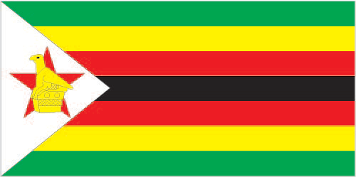

Africa :: ZIMBABWE
Introduction :: ZIMBABWE
-
The UK annexed Southern Rhodesia from the former British South Africa Company in 1923. A 1961 constitution was formulated that favored whites in power. In 1965 the government unilaterally declared its independence, but the UK did not recognize the act and demanded more complete voting rights for the black African majority in the country (then called Rhodesia). UN sanctions and a guerrilla uprising finally led to free elections in 1979 and independence (as Zimbabwe) in 1980. Robert MUGABE, the nation's first prime minister, has been the country's only ruler (as president since 1987) and has dominated the country's political system since independence. His chaotic land redistribution campaign, which began in 1997 and intensified after 2000, caused an exodus of white farmers, crippled the economy, and ushered in widespread shortages of basic commodities. Ignoring international condemnation, MUGABE rigged the 2002 presidential election to ensure his reelection.In 2005, the capital city of Harare embarked on Operation Restore Order, ostensibly an urban rationalization program, which resulted in the destruction of the homes or businesses of 700,000 mostly poor supporters of the opposition. MUGABE in 2007 instituted price controls on all basic commodities causing panic buying and leaving store shelves empty for months. General elections held in March 2008 contained irregularities but still amounted to a censure of the ZANU-PF-led government with the opposition winning a majority of seats in parliament. Movement for Democratic Change - Tsvangirai opposition leader Morgan TSVANGIRAI won the most votes in the presidential poll, but not enough to win outright. In the lead up to a run-off election in June 2008, considerable violence against opposition party members led to the withdrawal of TSVANGIRAI from the ballot. Extensive evidence of violence and intimidation resulted in international condemnation of the process. Difficult negotiations over a power-sharing "government of national unity," in which MUGABE remained president and TSVANGIRAI became prime minister, were finally settled in February 2009, although the leaders failed to agree upon many key outstanding governmental issues. MUGABE was reelected president in 2013 in balloting that was severely flawed and internationally condemned. As a prerequisite to holding the election, Zimbabwe enacted a new constitution by referendum, although many provisions in the new constitution have yet to be codified in law.
Geography :: ZIMBABWE
-
Southern Africa, between South Africa and Zambia20 00 S, 30 00 EAfricatotal: 390,757 sq kmland: 386,847 sq kmwater: 3,910 sq kmcountry comparison to the world: 62about four times the size of Indiana; slightly larger than Montanatotal: 3,229 kmborder countries (4): Botswana 834 km, Mozambique 1,402 km, South Africa 230 km, Zambia 763 km0 km (landlocked)none (landlocked)tropical; moderated by altitude; rainy season (November to March)mostly high plateau with higher central plateau (high veld); mountains in eastmean elevation: 961 melevation extremes: lowest point: junction of the Runde and Save Rivers 162 mhighest point: Inyangani 2,592 mcoal, chromium ore, asbestos, gold, nickel, copper, iron ore, vanadium, lithium, tin, platinum group metalsagricultural land: 42.5%arable land 10.9%; permanent crops 0.3%; permanent pasture 31.3%forest: 39.5%other: 18% (2011 est.)1,740 sq km (2012)Aside from major urban agglomerations in Harare and Bulawayo, population distribution is fairly even, with slightly greater overall numbers in the eastern halfrecurring droughts; floods and severe storms are raredeforestation; soil erosion; land degradation; air and water pollution; the black rhinoceros herd - once the largest concentration of the species in the world - has been significantly reduced by poaching; poor mining practices have led to toxic waste and heavy metal pollutionparty to: Biodiversity, Climate Change, Desertification, Endangered Species, Law of the Sea, Ozone Layer Protectionsigned, but not ratified: none of the selected agreementslandlocked; the Zambezi forms a natural riverine boundary with Zambia; in full flood (February-April) the massive Victoria Falls on the river forms the world's largest curtain of falling water; Lake Kariba on the Zambia-Zimbabwe border forms the world's largest reservoir by volume (180 cu km; 43 cu mi)
People and Society :: ZIMBABWE
-
13,805,084note: estimates for this country explicitly take into account the effects of excess mortality due to AIDS; this can result in lower life expectancy, higher infant mortality, higher death rates, lower population growth rates, and changes in the distribution of population by age and sex than would otherwise be expected (July 2017 est.)country comparison to the world: 72noun: Zimbabwean(s)adjective: ZimbabweanAfrican 99.4% (predominantly Shona; Ndebele is the second largest ethnic group), other 0.4%, unspecified 0.2% (2012 est.)Shona (official; most widely spoken), Ndebele (official, second most widely spoken), English (official; traditionally used for official business), 13 minority languages (official; includes Chewa, Chibarwe, Kalanga, Koisan, Nambya, Ndau, Shangani, sign language, Sotho, Tonga, Tswana, Venda, and Xhosa)Protestant 82.7% (includes Apostolic 41.8%, Pentecostal 25.2%, other 15.7%), Roman Catholic 6.7%, other Christian 4.6%, traditional religion 0.6%, Muslim 0.4%, other 0.1%, none 4.9% (2015 est.)Zimbabwe’s progress in reproductive, maternal, and child health has stagnated in recent years. According to a 2010 Demographic and Health Survey, contraceptive use, the number of births attended by skilled practitioners, and child mortality have either stalled or somewhat deteriorated since the mid-2000s. Zimbabwe’s total fertility rate has remained fairly stable at about 4 children per woman for the last two decades, although an uptick in the urban birth rate in recent years has caused a slight rise in the country’s overall fertility rate. Zimbabwe’s HIV prevalence rate dropped from approximately 29% to 15% since 1997 but remains among the world’s highest and continues to suppress the country’s life expectancy rate. The proliferation of HIV/AIDS information and prevention programs and personal experience with those suffering or dying from the disease have helped to change sexual behavior and reduce the epidemic.Historically, the vast majority of Zimbabwe’s migration has been internal – a rural-urban flow. In terms of international migration, over the last 40 years Zimbabwe has gradually shifted from being a destination country to one of emigration and, to a lesser degree, one of transit (for East African illegal migrants traveling to South Africa). As a British colony, Zimbabwe attracted significant numbers of permanent immigrants from the UK and other European countries, as well as temporary economic migrants from Malawi, Mozambique, and Zambia. Although Zimbabweans have migrated to South Africa since the beginning of the 20th century to work as miners, the first major exodus from the country occurred in the years before and after independence in 1980. The outward migration was politically and racially influenced; a large share of the white population of European origin chose to leave rather than live under a new black-majority government.In the 1990s and 2000s, economic mismanagement and hyperinflation sparked a second, more diverse wave of emigration. This massive out migration – primarily to other southern African countries, the UK, and the US – has created a variety of challenges, including brain drain, illegal migration, and human smuggling and trafficking. Several factors have pushed highly skilled workers to go abroad, including unemployment, lower wages, a lack of resources, and few opportunities for career growth.0-14 years: 38.9% (male 2,658,563/female 2,711,017)15-24 years: 20.47% (male 1,383,337/female 1,442,738)25-54 years: 31.9% (male 2,207,012/female 2,196,996)55-64 years: 4.27% (male 233,771/female 355,738)65 years and over: 4.46% (male 251,968/female 363,944) (2017 est.)total dependency ratio: 79.5youth dependency ratio: 74.4elderly dependency ratio: 5.1potential support ratio: 19.7 (2015 est.)total: 20 yearsmale: 19.6 yearsfemale: 20.4 years (2017 est.)country comparison to the world: 1881.56% (2017 est.)country comparison to the world: 6934.2 births/1,000 population (2017 est.)country comparison to the world: 2510.2 deaths/1,000 population (2017 est.)country comparison to the world: 36-8.5 migrant(s)/1,000 population (2017 est.)country comparison to the world: 210Aside from major urban agglomerations in Harare and Bulawayo, population distribution is fairly even, with slightly greater overall numbers in the eastern halfurban population: 32.2% of total population (2017)rate of urbanization: 2.44% annual rate of change (2015-20 est.)HARARE (capital) 1.501 million (2015)at birth: 1.03 male(s)/female0-14 years: 1.02 male(s)/female15-24 years: 1.02 male(s)/female25-54 years: 1.1 male(s)/female55-64 years: 0.58 male(s)/female65 years and over: 0.64 male(s)/femaletotal population: 1.01 male(s)/female (2016 est.)20 yearsnote: median age at first birth among women 25-29 (2015 est.)443 deaths/100,000 live births (2015 est.)country comparison to the world: 24total: 32.7 deaths/1,000 live birthsmale: 36.8 deaths/1,000 live birthsfemale: 28.5 deaths/1,000 live births (2017 est.)country comparison to the world: 57total population: 60.4 yearsmale: 58.3 yearsfemale: 62.5 years (2017 est.)country comparison to the world: 2033.98 children born/woman (2017 est.)country comparison to the world: 3766.8% (2015)6.4% of GDP (2014)country comparison to the world: 980.07 physicians/1,000 population (2011)1.7 beds/1,000 population (2011)improved:urban: 97% of populationrural: 67.3% of populationtotal: 76.9% of populationunimproved:urban: 3% of populationrural: 32.7% of populationtotal: 23.1% of population (2015 est.)improved:urban: 49.3% of populationrural: 30.8% of populationtotal: 36.8% of populationunimproved:urban: 50.7% of populationrural: 69.2% of populationtotal: 63.2% of population (2015 est.)13.5% (2016 est.)country comparison to the world: 61.3 million (2016 est.)country comparison to the world: 830,000 (2016 est.)country comparison to the world: 8degree of risk: highfood or waterborne diseases: bacterial and protozoal diarrhea, hepatitis A, and typhoid fevervectorborne diseases: malaria and dengue feverwater contact disease: schistosomiasisanimal contact disease: rabies (2016)15.5% (2016)country comparison to the world: 12611.2% (2014)country comparison to the world: 698.4% of GDP (2014)country comparison to the world: 155definition: age 15 and over can read and write Englishtotal population: 86.5%male: 88.5%female: 84.6% (2015 est.)total: 10 yearsmale: 10 yearsfemale: 10 years (2013)total: 16.5%male: 11.7%female: 21.1% (2014 est.)country comparison to the world: 116
Government :: ZIMBABWE
-
conventional long form: Republic of Zimbabweconventional short form: Zimbabweformer: Southern Rhodesia, Rhodesiaetymology: takes its name from the Kingdom of Zimbabwe (13th-15th century) and its capital of Great Zimbabwe, the largest stone structure in pre-colonial southern Africasemi-presidential republicname: Hararegeographic coordinates: 17 49 S, 31 02 Etime difference: UTC+2 (7 hours ahead of Washington, DC, during Standard Time)8 provinces and 2 cities* with provincial status; Bulawayo*, Harare*, Manicaland, Mashonaland Central, Mashonaland East, Mashonaland West, Masvingo, Matabeleland North, Matabeleland South, Midlands18 April 1980 (from the UK)Independence Day, 18 April (1980)history: previous 1965 (at Rhodesian independence), 1979 (Lancaster House Agreement), 1980 (at Zimbabwean independence); latest final draft completed January 2013, approved by referendum 16 March 2013, approved by Parliament 9 May 2013, effective 22 May 2013amendments: proposed by the Senate or by the House of Assembly; passage requires two-thirds majority vote by the membership of both houses of Parliament and assent by the president of the republic; amendments to constitutional chapters on fundamental human rights and freedoms and on agricultural lands also require approval by a majority of votes cast in a referendum; amended many times, last in 2017 (2017)mixed legal system of English common law, Roman-Dutch civil law, and customary lawhas not submitted an ICJ jurisdiction declaration; non-party state to the ICCtcitizenship by birth: nocitizenship by descent only: the father must be a citizen of Zimbabwe; in the case of a child born out of wedlock, the mother must be a citizendual citizenship recognized: noresidency requirement for naturalization: 5 years18 years of age; universalchief of state: Executive President Robert Gabriel MUGABE (since 31 December 1987); First Vice President (vacant); note - dismissed by President MUGABE on 6 November 2017; Second Vice Presdident Phelekezela MPHOKO (since 12 December 2014)head of government: Executive President Robert Gabriel MUGABE (since 31 December 1987); note - following the 31 July 2013 presidential election, the position of prime minister was abolishedcabinet: Cabinet appointed by president, responsible to House of Assemblyelections/appointments: each presidential candidate nominated with a nomination paper signed by at least 10 registered voters (at least 1 candidate from each province) and directly elected by absolute majority popular vote in 2 rounds if needed for a 5-year term (no term limits); election last held on 31 July 2013 (next to be held in 2018); co-vice presidents drawn from party leadershipelection results: Robert Gabriel MUGABE reelected president; percent of vote - Robert Gabriel MUGABE (ZANU-PF) 61.1%, Morgan TSVANGIRAI (MDC-T) 34.4%, Welshman NCUBE (MDC-N) 2.7%, other 1.8%; note - the election process was considered flawed and roundly criticized by election monitors and international bodies; both the African Union and the South African Development Community endorsed the results of the election with some concernsdescription: bicameral Parliament consists of the Senate (80 seats; 60 members directly elected in multi-seat constituencies - 6 seats in each of the 10 provinces - by proportional representation vote, 16 indirectly elected by the regional governing councils, 2 reserved for the National Council Chiefs, and 2 reserved for members with disabilities; members serve 5-year terms) and the House of Assembly (270 seats; 210 members directly elected in single-seat constituencies by simple majority vote and 60 seats reserved for women directly elected by proportional representation vote; members serve 5-year terms)elections: last held on 31 July 2013 (next to be held in 2018)election results: Senate - percent of vote by party - NA; seats by party - ZANU-PF 37, MDC-T 21, MDC-N 2, chiefs 18, people with disabilities 2; House of Assembly - percent of vote by party - ZANU-PF 62.4%, MDC-T 30.3%, MDC-N 4.7%, other 0.7%, independent 1.9%; seats by party - ZANU-PF 196, MDC-T 70, MDC-N 2, independent 2highest court(s): Supreme Court (consists of the chief justice and 4 judges); Constitutional Court (consists of the chief and deputy chief justices and 9 judges)judge selection and term of office: Supreme Court judges appointed by the president upon recommendation of the Judicial Service Commission, an independent body consisting of the chief justice, Public Service Commission chairman, attorney general, and 2-3 members appointed by the president; judges normally serve until age 65 but can elect to serve until age 70; Constitutional Court judge appointment NA; judges serve nonrenewable 15-year termssubordinate courts: High Court; Labor Court; Administrative Court; regional magistrate courts; customary law courts; special courtsFreedom Front [Cosmas MPONDA]Movement for Democratic Change - Ncube or MDC-N [Welshman NCUBE]Movement for Democratic Change - Tsvangirai or MDC-T [Morgan TSVANGIRAI]National People's Party or NPP [Joyce MUJURU] formerly Zimbabwe People First or ZimPF)Peoples Democratic Party or PDP [Tendai BITI]Transform Zimbabwe or TZ [Jacob NGARIVHUME]Zimbabwe African National Union-Patriotic Front or ZANU-PF [Robert Gabriel MUGABE]Zimbabwe African Peoples Union or ZAPU [Dumiso DABENGWA]Zimbabwe People First or ZimFirst [Maxwell SHUMBA]Crisis in Zimbabwe CoalitionNational Constitutional Assembly or NCA [Lovemore MADHUKU]Women of Zimbabwe Arise or WOZA [Jenni WILLIAMS]Zimbabwe Congress of Trade Unions or ZCTU [Peter MUTASA]Zimbabwe Human Rights Association or ZimRights [Okay MACHISA]Zimbabwe Human Rights NGO Forum [Jestina MUKOKO]Zimbabwe Lawyers for Human Rights or ZLHR [Roselyn HANZI]ACP, AfDB, AU, COMESA, FAO, G-15, G-77, IAEA, IBRD, ICAO, ICRM, IDA, IFAD, IFC, IFRCS, ILO, IMF, IMO, Interpol, IOC, IOM, IPU, ISO, ITSO, ITU, ITUC (NGOs), MIGA, NAM, OPCW, PCA, SADC, UN, UNAMID, UNCTAD, UNESCO, UNIDO, UNMIL, UNMISS, UNOCI, UNWTO, UPU, WCO, WFTU (NGOs), WHO, WIPO, WMO, WTOchief of mission: Ambassador Ammon MUTEMBWA (since 18 November 2014)chancery: 1608 New Hampshire Avenue NW, Washington, DC 20009telephone: [1] (202) 332-7100FAX: [1] (202) 483-9326chief of mission: Ambassador Harry K. THOMAS, Jr. (since 25 February 2016)embassy: 172 Herbert Chitepo Avenue, Hararemailing address: P.O. Box 3340, Hararetelephone: [263] (4) 250-593 through 250-594FAX: [263] (4) 796-488, or 722-618seven equal horizontal bands of green, yellow, red, black, red, yellow, and green with a white isosceles triangle edged in black with its base on the hoist side; a yellow Zimbabwe bird representing the long history of the country is superimposed on a red five-pointed star in the center of the triangle, which symbolizes peace; green represents agriculture, yellow mineral wealth, red the blood shed to achieve independence, and black stands for the native peopleZimbabwe bird symbol, African fish eagle, flame lily; national colors: green, yellow, red, black, whitename: "Kalibusiswe Ilizwe leZimbabwe" [Northern Ndebele language] "Simudzai Mureza WeZimbabwe" [Shona] (Blessed Be the Land of Zimbabwe)lyrics/music: Solomon MUTSWAIRO/Fred Lecture CHANGUNDEGAnote: adopted 1994
Economy :: ZIMBABWE
-
Zimbabwe's economy depends heavily on its mining and agriculture sectors. Following a decade of contraction from 1998 to 2008, the economy recorded real growth of more than 10% per year in the period 2010-13, before slowing to roughly 4% in 2014 due to poor harvests, low diamond revenues, and decreased investment. Growth turned negative in 2016. Lower mineral prices, infrastructure and regulatory deficiencies, a poor investment climate, a large public and external debt burden, and extremely high government wage expenses impede the country’s economic performance.Until early 2009, the Reserve Bank of Zimbabwe (RBZ) routinely printed money to fund the budget deficit, causing hyperinflation. Adoption of a multi-currency basket in early 2009 - which allowed currencies such as the Botswana pula, the South Africa rand, and the US dollar to be used locally - reduced inflation below 10% per year. In January 2015, as part of the government’s effort to boost trade and attract foreign investment, the RBZ announced that the Chinese renmimbi, Indian rupee, Australian dollar, and Japanese yen would be accepted as legal tender in Zimbabwe, though transactions were predominantly carried out in US dollars and South African rand until 2016, when the rand’s devaluation and instability led to near-exclusive use of the US dollar. The government in November 2016 began releasing bond notes, a parallel currency legal only in Zimbabwe which the government claims will have a one-to-one exchange ratio with the US dollar, to ease cash shortages. Bond notes began trading at a discount of up to 10% in the black market by the end of 2016.Zimbabwe’s government entered a second Staff Monitored Program with the IMF in 2014 and undertook other measures to reengage with international financial institutions. Zimbabwe repaid roughly $108 million in arrears to the IMF in October 2016, but financial observers note that Zimbabwe is unlikely to gain new financing because the government has not disclosed how it plans to repay more than $1.7 billion in arrears to the World Bank and African Development Bank. International financial institutions want Zimbabwe to implement significant fiscal and structural reforms before granting new loans. Foreign and domestic investment continues to be hindered by the lack of land tenure and titling, the inability to repatriate dividends to investors overseas, and the lack of clarity regarding the government’s Indigenization and Economic Empowerment Act.$32.38 billion (2016 est.)$31.77 billion (2015 est.)$30.98 billion (2014 est.)note: data are in 2016 dollarscountry comparison to the world: 133$16.12 billion (2016 est.)0.7% (2016 est.)1.4% (2015 est.)2.8% (2014 est.)country comparison to the world: 183$2,200 (2016 est.)$2,300 (2015 est.)$2,300 (2014 est.)note: data are in 2016 dollarscountry comparison to the world: 20615.5% of GDP (2016 est.)4.9% of GDP (2015 est.)3.8% of GDP (2014 est.)country comparison to the world: 164household consumption: 83.8%government consumption: 21.6%investment in fixed capital: 13.5%investment in inventories: 0%exports of goods and services: 25.9%imports of goods and services: -44.9% (2016 est.)agriculture: 12.5%industry: 27%services: 60.6% (2016 est.)tobacco, corn, cotton, wheat, coffee, sugarcane, peanuts; sheep, goats, pigsmining (coal, gold, platinum, copper, nickel, tin, diamonds, clay, numerous metallic and nonmetallic ores), steel; wood products, cement, chemicals, fertilizer, clothing and footwear, foodstuffs, beverages-3% (2016 est.)country comparison to the world: 1807.701 million (2016 est.)country comparison to the world: 65agriculture: 66%industry: 10%services: 24% (1996)95% (2009 est.)80% (2005 est.)note: data include both unemployment and underemployment; true unemployment is unknown and, under current economic conditions, unknowablecountry comparison to the world: 21772.3% (2012 est.)lowest 10%: 2%highest 10%: 40.4% (1995)50.1 (2006)50.1 (1995)country comparison to the world: 18revenues: $3.5 billionexpenditures: $4.9 billion (2016 est.)24.7% of GDP (2016 est.)country comparison to the world: 120-9.9% of GDP (2016 est.)country comparison to the world: 20069.9% of GDP (2016 est.)59.4% of GDP (2015 est.)country comparison to the world: 52calendar year-1.6% (2016 est.)-2.8% (2015 est.)country comparison to the world: 67.17% (31 December 2010)975% (31 December 2007)country comparison to the world: 4615% (31 December 2016 est.)17% (31 December 2015 est.)country comparison to the world: 43$2.274 billion (31 December 2016 est.)$2.192 billion (31 December 2015 est.)note: Zimbabwe's central bank no longer publishes data on monetary aggregates, except for bank deposits, which amounted to $2.1 billion in November 2010; the Zimbabwe dollar stopped circulating in early 2009; since then, the US dollar and South African rand have been the most frequently used currencies; there are no reliable estimates of the amount of foreign currency circulating in Zimbabwecountry comparison to the world: 126$3.617 billion (31 December 2015 est.)$3.753 billion (31 December 2016 est.)country comparison to the world: 137$5.398 billion (31 December 2016 est.)$5.203 billion (31 December 2015 est.)country comparison to the world: 124$4.073 billion (13 April 2015 est.)$11.82 billion (31 December 2012 est.)$10.9 billion (31 December 2011 est.)country comparison to the world: 92$-662 million (2016 est.)$-1.519 billion (2015 est.)country comparison to the world: 135$3.366 billion (2016 est.)$3.614 billion (2015 est.)country comparison to the world: 118platinum, cotton, tobacco, gold, ferroalloys, textiles/clothingSouth Africa 79.5%, Mozambique 9.5%, UAE 4.1% (2016)$5.351 billion (2016 est.)$6.062 billion (2015 est.)country comparison to the world: 119machinery and transport equipment, other manufactures, chemicals, fuels, food productsSouth Africa 46.6%, Zambia 24% (2016)$407.2 million (31 December 2016 est.)$433.8 million (31 December 2015 est.)country comparison to the world: 147$10.14 billion (31 December 2016 est.)$8.735 billion (31 December 2015 est.)country comparison to the world: 112$3.518 billion (31 December 2016 est.)$3.199 billion (31 December 2015 est.)country comparison to the world: 109$271.6 million (31 December 2016 est.)$238.6 million (31 December 2015 est.)country comparison to the world: 96Zimbabwean dollars (ZWD) per US dollar -1 (2016 est.)NA (2013)234.25 (2010)note: the dollar was adopted as a legal currency in 2009; since then the Zimbabwean dollar has experienced hyperinflation and is essentially worthless
Energy :: ZIMBABWE
-
population without electricity: 8,500,000electrification - total population: 40%electrification - urban areas: 80%electrification - rural areas: 21% (2013)9.384 billion kWh (2015 est.)country comparison to the world: 1067.63 billion kWh (2015 est.)country comparison to the world: 1061.239 billion kWh (2015 est.)country comparison to the world: 541.139 billion kWh (2015 est.)country comparison to the world: 642.129 million kW (2015 est.)country comparison to the world: 11058% of total installed capacity (2015 est.)country comparison to the world: 1350% of total installed capacity (2015 est.)country comparison to the world: 21537.1% of total installed capacity (2015 est.)country comparison to the world: 565% of total installed capacity (2015 est.)country comparison to the world: 970 bbl/day (2016 est.)country comparison to the world: 2170 bbl/day (2014 est.)country comparison to the world: 2160 bbl/day (2014 est.)country comparison to the world: 2160 bbl (1 January 2017 es)country comparison to the world: 2170 bbl/day (2014 est.)country comparison to the world: 21729,000 bbl/day (2015 est.)country comparison to the world: 1240 bbl/day (2014 est.)country comparison to the world: 21726,390 bbl/day (2014 est.)country comparison to the world: 1040 cu m (2013 est.)country comparison to the world: 2170 cu m (2014 est.)country comparison to the world: 1520 cu m (2013 est.)country comparison to the world: 2150 cu m (2013 est.)country comparison to the world: 2150 cu m (1 January 2014 es)country comparison to the world: 21211 million Mt (2013 est.)country comparison to the world: 102
Communications :: ZIMBABWE
-
total subscriptions: 305,720subscriptions per 100 inhabitants: 2 (July 2016 est.)country comparison to the world: 113total: 12,878,926subscriptions per 100 inhabitants: 89 (July 2016 est.)country comparison to the world: 77general assessment: competition has driven rapid expansion of telecommunications, particularly cellular voice and mobile broadband, in recent years; continued economic instability and infrastructure limitations, such as reliable power, hinder progressdomestic: consists of microwave radio relay links, open-wire lines, radiotelephone communication stations, fixed wireless local loop installations, fiber-optic cable, VSAT terminals, and a substantial mobile-cellular network; Internet connection is most readily available in Harare and major towns; two government owned and two private cellular providers; 3G and VoIP services are widely available with 4G/LTE service being deployedinternational: country code - 263; satellite earth stations - 2 Intelsat; 5 international digital gateway exchanges; fiber-optic connections to neighboring states provide access to international networks via undersea cable (2017)government owns all local radio and TV stations; foreign shortwave broadcasts and satellite TV are available to those who can afford antennas and receivers; in rural areas, access to TV broadcasts is extremely limited; analog TV only, no digital service (2017).zwtotal: 3,363,256percent of population: 23.1% (July 2016 est.)country comparison to the world: 88
Transportation :: ZIMBABWE
-
number of registered air carriers: 2inventory of registered aircraft operated by air carriers: 4annual passenger traffic on registered air carriers: 370,164annual freight traffic on registered air carriers: 962,642 mt-km (2015)Z (2016)196 (2013)country comparison to the world: 29total: 17over 3,047 m: 32,438 to 3,047 m: 21,524 to 2,437 m: 5914 to 1,523 m: 7 (2013)total: 1791,524 to 2,437 m: 3914 to 1,523 m: 104under 914 m: 72 (2013)refined products 270 km (2013)total: 3,427 kmnarrow gauge: 3,427 km 1.067-m gauge (313 km electrified) (2014)country comparison to the world: 53total: 97,267 kmpaved: 18,481 kmunpaved: 78,786 km (2002)country comparison to the world: 49(some navigation possible on Lake Kariba) (2011)river port(s): Binga, Kariba (Zambezi)
Military and Security :: ZIMBABWE
-
2.2% of GDP (2016)2.34% of GDP (2015)2.32% of GDP (2014)2.34% of GDP (2013)2.26% of GDP (2012)country comparison to the world: 22Zimbabwe Defense Forces (ZDF): Zimbabwe National Army (ZNA), Air Force of Zimbabwe (AFZ) (2012)18-24 years of age for voluntary military service; no conscription; women are eligible to serve (2012)
Transnational Issues :: ZIMBABWE
-
Namibia has supported, and in 2004 Zimbabwe dropped objections to, plans between Botswana and Zambia to build a bridge over the Zambezi River, thereby de facto recognizing a short, but not clearly delimited, Botswana-Zambia boundary in the river; South Africa has placed military units to assist police operations along the border of Lesotho, Zimbabwe, and Mozambique to control smuggling, poaching, and illegal migrationrefugees (country of origin): 5,925 (Democratic Republic of Congo) (2016)IDPs: undetermined (political violence, violence in association with the 2008 election, human rights violations, land reform, and economic collapse) (2015)stateless persons: 300,000 (2016)current situation: Zimbabwe is a source, transit, and destination country for men, women, and children subjected to forced labor and sex trafficking; Zimbabwean women and girls from towns bordering South Africa, Mozambique, and Zambia are subjected to forced labor, including domestic servitude, and prostitution catering to long-distance truck drivers; Zimbabwean men, women, and children experience forced labor in agriculture and domestic servitude in rural areas; family members may recruit children and other relatives from rural areas with promises of work or education in cities and towns where they end up in domestic servitude and sex trafficking; Zimbabwean women and men are lured into exploitative labor situations in South Africa and other neighboring countriestier rating: Tier 3 - Zimbabwe does not fully comply with the minimum standards for the elimination of trafficking and is not making significant efforts to do so; the government passed an anti-trafficking law in 2014 defining trafficking in persons as a crime of transportation and failing to capture the key element of the international definition of human trafficking – the purpose of exploitation – which prevents the law from being comprehensive or consistent with the 2000 UN TIP Protocol that Zimbabwe acceded to in 2013; the government did not report on anti-trafficking law enforcement efforts during 2014, and corruption in law enforcement and the judiciary remain a concern; authorities made minimal efforts to identify and protect trafficking victims, relying on NGOs to identify and assist victims; Zimbabwe’s 2014 anti-trafficking law required the opening of 10 centers for trafficking victims, but none were established during the year; five existing shelters for vulnerable children and orphans may have accommodated child victims; in January 2015, an inter-ministerial anti-trafficking committee was established, but it is unclear if the committee ever met or initiated any activities (2015)transit point for cannabis and South Asian heroin, mandrax, and methamphetamines en route to South Africa